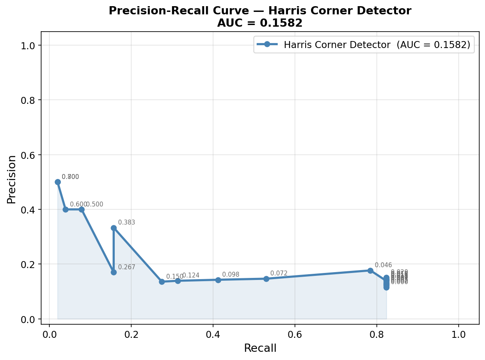

Input Image
Original building image used for ground truth and corner detection.
Corner Detection and Feature Matching
Part A
Notebook, outputs, overlays, and summary data.
Original building image used for ground truth and corner detection.

Precision-recall curve saved from the Harris detector evaluation.
Rows from harris_summary.csv.
Saved Harris detections across thresholds.
Part B